1. 论文速览与证据链
1.0 一句话贡献与关键词
用跨手 latent action space 统一不同灵巧手的动作表示，让单个 VLA 能在多手数据上训练并迁移到新手型。这一定义把 XL-VLA / DexLatent 的任务对象、核心机制和预期收益放在同一句话中。关键词包括：XL-VLA; DexLatent; latent action; cross-hand; VLA; embodiment-invariant control。这些概念共同界定了该工作位于灵巧操作、动作表示、感知融合或跨具身学习中的具体技术位置。
1.1 技术定位与核心贡献
XL-VLA 聚焦一个明确瓶颈：不同灵巧手的动作维度和关节语义不同，使多手型数据无法直接共同训练。它通过 DexLatent 学习跨手型共享的 latent action，再让 VLA 预测 latent，由各手型 decoder 还原具体动作。它适合作为动作表示创新方向，而不是完整机器人系统模板。XL-VLA / DexLatent 把跨灵巧手泛化的核心瓶颈放在 action representation：不同手型先把关节动作编码到共享 latent，VLA 只预测该 latent，再由目标手型 decoder 恢复具体动作。
2. 研究问题与动机
2.1 论文面对的真实瓶颈
现有 VLA 通常将动作 token 或连续动作绑定到特定机器人 embodiment。对于灵巧手，这个问题更严重：手指数、关节数、耦合方式和控制范围差异巨大。作者希望利用多个手型的数据共同训练，并让模型迁移到未参与训练或数据较少的新手型，因此需要一个既共享任务语义、又能保留各手精细控制能力的动作潜空间。不同手的自由度、关节语义与运动范围不兼容，直接 padding 或拼接会把大量手型特有维度暴露给策略。DexLatent 试图让共享空间表达操作功能，而把具体拓扑和约束留给每只手的 decoder。
4. 方法、表示与训练流程
4.1 总体方法链路
DexLatent 首先将不同手型的动作序列编码为共享 latent，并通过各 embodiment decoder 重建原动作；训练目标既要求动作重建，也要求 latent 保留跨手型可对应的操作语义。XL-VLA 将视觉语言观测映射到这个 latent action，而不是直接预测具体关节命令。部署时，根据目标手型选择对应 decoder，得到可执行动作。方法成败取决于 latent 是否保留指尖接触细节。预训练阶段为每种手配置 encoder/decoder，通过重建损失保持自身动作可恢复，并通过 differentiable forward kinematics 与 retargeting loss 对齐跨手型功能。VLA 训练时冻结这些编解码器，只微调在共享 latent 上工作的 action expert。
XL-VLA：在共享 latent action space 中预测动作
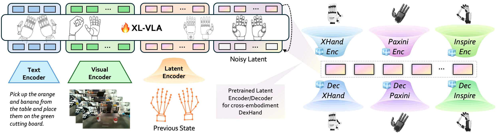
DexLatent 的三类训练约束
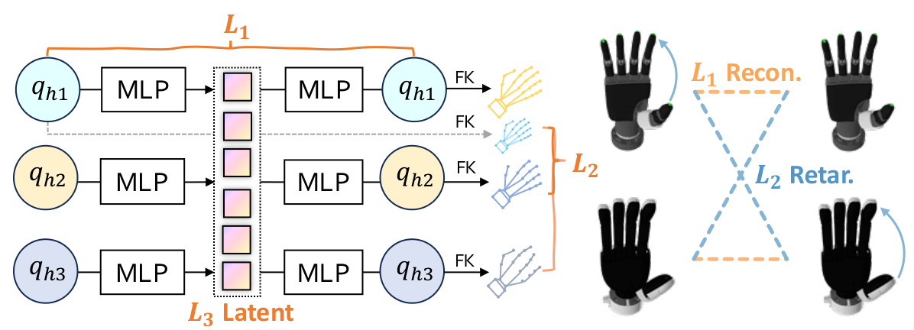
xArm 策略实际看到的单目输入
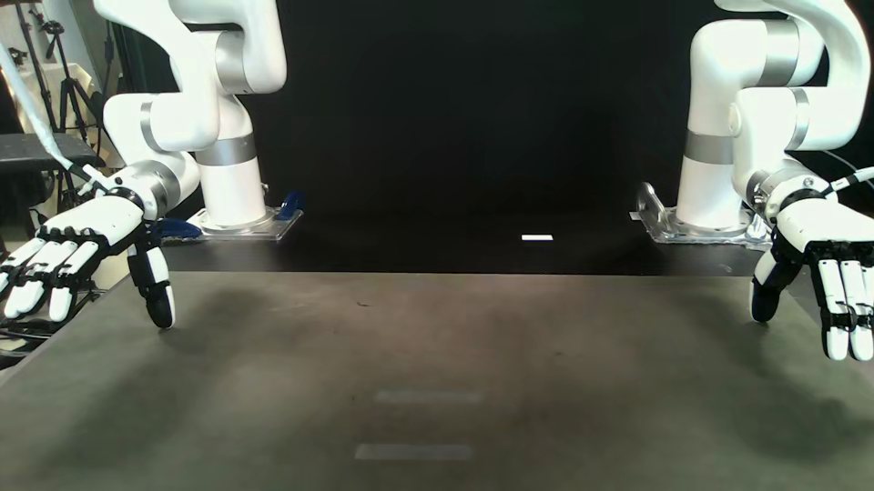
5. 实验设计、结果与消融
5.1 任务、数据与评估协议
实验的关键不是单一手型性能，而是多手联合训练是否优于各自独立训练、数据丰富手型是否能帮助低数据手型，以及模型能否 transfer 到未见任务或新 embodiment。应重点查看 DexLatent 消融、跨手型结果和 G1 等目标平台实验。若跨手型收益只出现在相似手型，通用性结论需要收缩。关键证据包括未见任务零样本泛化、G1 跨机器人联合训练、不同手型真实任务，以及 latent trajectory 可视化。离线重建误差只能证明压缩可逆，跨手型任务收益才证明 latent 含有可迁移操作语义。
未见 hand-task 组合的零样本泛化
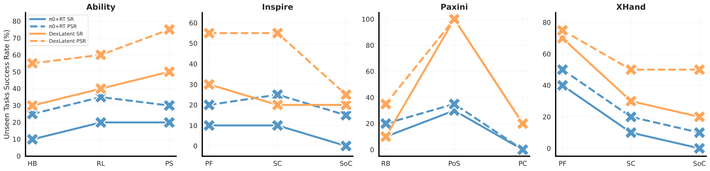
Unitree G1 上的跨机器人联合训练结果
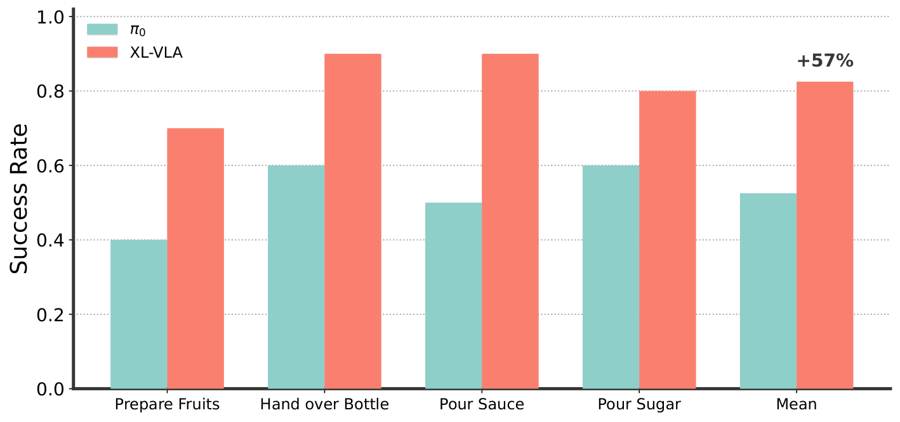
同一 latent 在不同灵巧手上的姿态解码

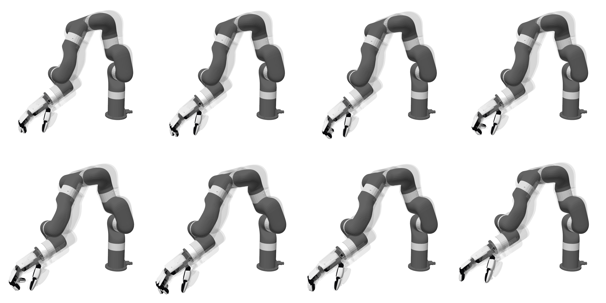
xArm 单相机布置
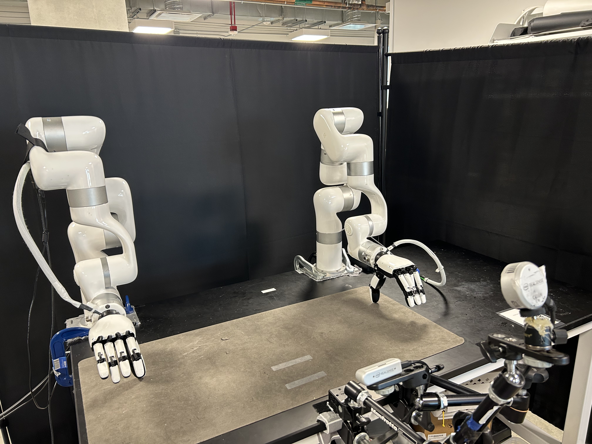
四种训练灵巧手的形态差异
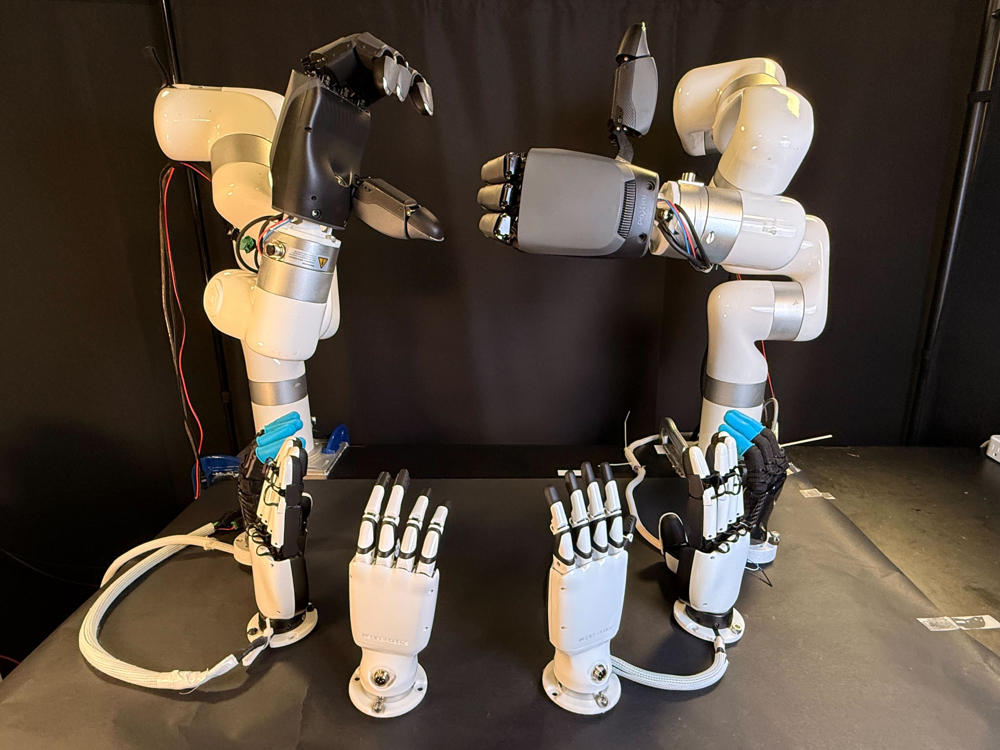
G1 humanoid 的真实工作场景
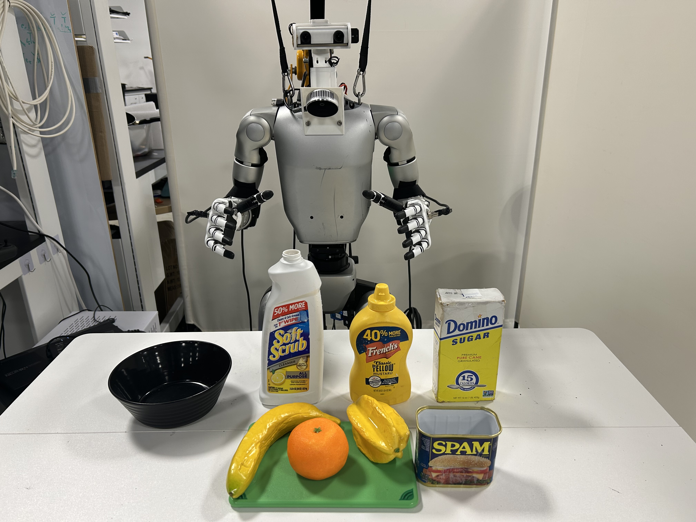
G1 第一视角输入
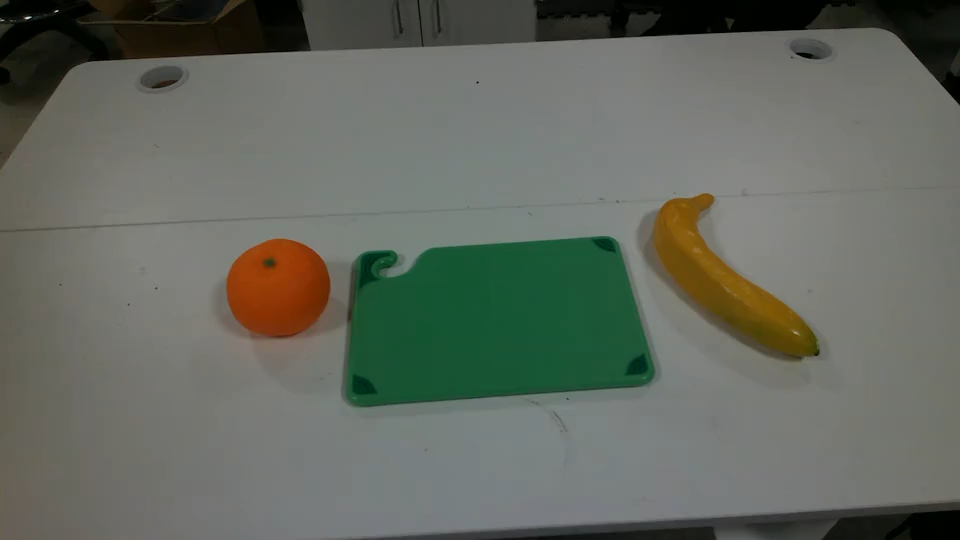
十项任务使用的对象集合
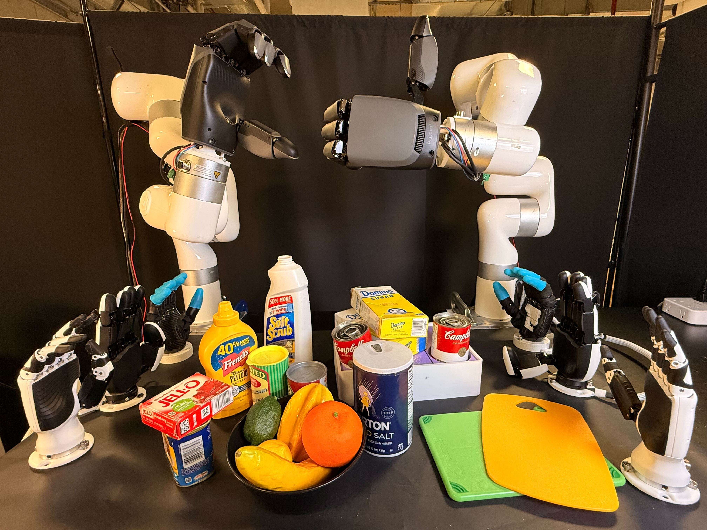
6. 复现路线与工程风险
6.1 最小可行复现路径
先独立复现 DexLatent，而不是直接训练完整 XL-VLA。需要至少两种动作空间明显不同的手型数据、对应机器人模型与动作归一化规则。检查 latent 插值、重建误差和实际执行轨迹，确认 latent 没有只编码手型身份。之后再将其接入 VLA。难点是多数据集时间尺度、关节范围和任务分布对齐。复现应先独立训练 DexLatent，检查重建、插值、跨手型解码和正运动学轨迹，再接完整 VLA。至少需要两种拓扑差异明显的手型，并统一时间尺度、关节归一化和任务语义。
7. 分析、局限与边界
7.1 最有价值的贡献
共享 latent 为跨手型迁移提供了优雅接口，但压缩也可能丢失指尖力控和细粒度接触信息。不同手型若能力差异过大，同一 latent 未必具有一致语义。论文的迁移结果需要结合训练手型数量、任务相似度与 decoder 是否见过目标数据判断。共享 latent 可能压掉高频接触细节，也可能只学会手型身份。对于依赖精细力控或特殊关节结构的任务，目标手 decoder 未必能从抽象 latent 恢复足够准确的动作。
xArm 的 Vision Pro 遥操作采集
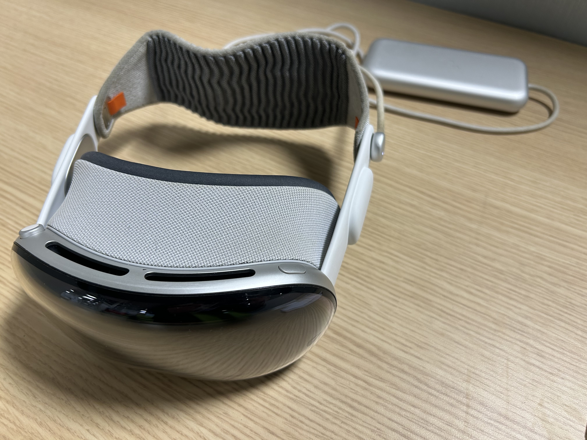
G1 上半身与 MANUS 手套遥操作
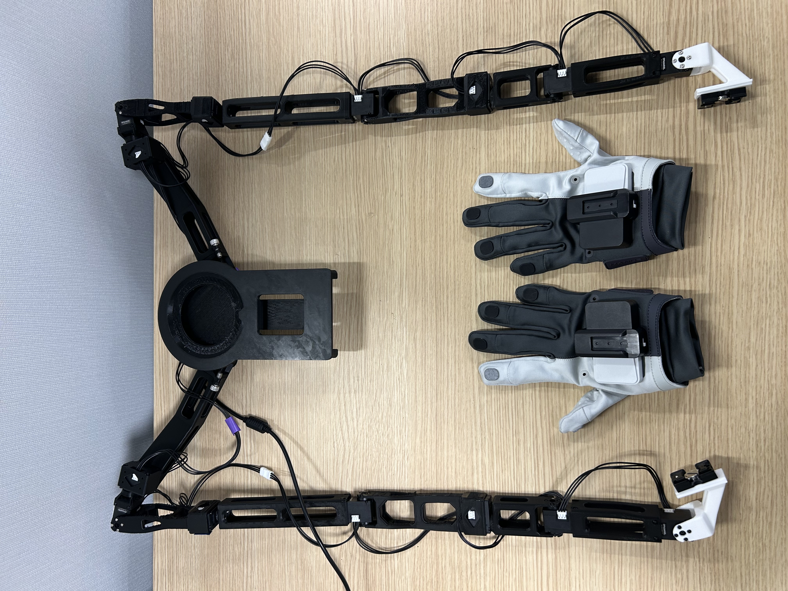
证据深挖：机制、实验与复现判断
DexLatent 为什么不需要配对跨手轨迹
训练时从每只手关节限制内随机采样配置，自编码保证自身可恢复；同一 latent 经其他手 decoder 后，通过可微 FK 比较拇指—手指的距离和方向，从而建立功能几何对应。这个过程只需要各手运动学模型，不需要让四只手执行完全相同的遥操作轨迹。优势是数据便宜，限制是对齐目标主要是静态指尖几何。
三个损失分别防止什么失败
没有 L1，decoder 可能为了跨手对齐而丢失某只手自身可执行姿态；没有 L2，同一 latent 在不同手上可能产生完全不同的 pinch 关系；没有 KL 型 L3，latent 可能碎裂，插值和 VLA 预测的小误差会造成大幅动作跳变。消融中移除 L2 后跨具身方向/距离误差显著恶化，正是共享动作语义依赖该约束的直接证据。
主结果为何比离线重建更重要
离线 autoencoder 指标只能说明动作压缩可逆。论文中跨手多任务训练把平均成功率从 π0 的 0.55 提升到 0.90，XHand 从 0.29 提升到 0.70；latent replay 在两组手对上达到 0.82/0.81，高于 LAD 的 0.60/0.61。这些真实执行结果才说明 latent 对策略学习和跨手动作具有功能价值。
零样本泛化的准确边界
未见任务实验留出的是特定 hand-task 组合，而不是完全未见手型：目标手仍在其他任务中参与训练，其 encoder/decoder 也已预训练。因此它证明技能能通过共享 latent 从其他手迁移到该手，而不是新硬件无需建模即可接入。真正的新手型仍需要运动学模型、encoder/decoder 和 latent 对齐过程。
8. 组会问答与阅读结论
XL-VLA / DexLatent 的关键取舍
DexLatent 不依赖配对跨手轨迹，而从随机关节配置和可微 FK 中学习共享几何；VLA 随后只预测 latent。跨手平均成功率、未见 hand-task 组合、G1 结果和 latent replay 共同支持表示可迁移。边界是对齐集中在指尖几何，不能保证力、触觉和不可等价手型能力一致。
Q1：为什么不能直接 padding 不同关节向量？
维度对齐不代表关节语义和物理能力对齐。
Q2：DexLatent 如何避免只记住手型？
需要共享任务监督、跨手型训练和重建/迁移消融共同证明。
Q3：最强实验应是什么？
低资源或未见手型从多手训练中显著受益。
Q4：latent 最大风险？
丢失精细接触与力信息。
Q5：可做的创新？
加入触觉/接触约束的跨手型 latent。
阅读结论与研究启发
这是最适合发展创新点的一篇。建议将 DexLatent 作为独立模块复现，并尝试触觉条件、物理约束或 world-model latent 对齐；不必首先复刻完整 VLA。